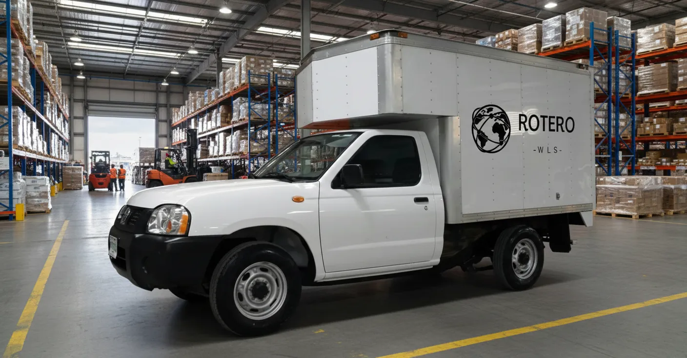
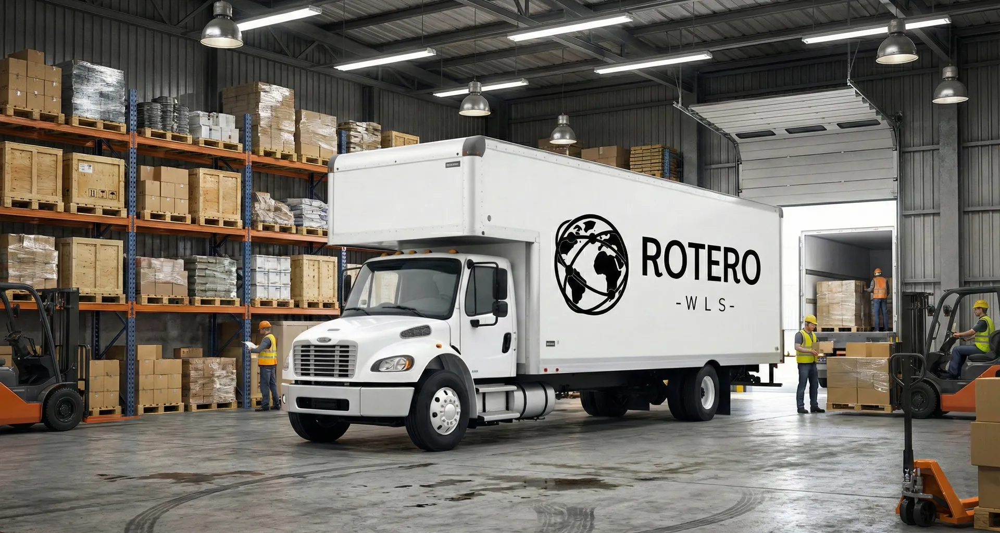
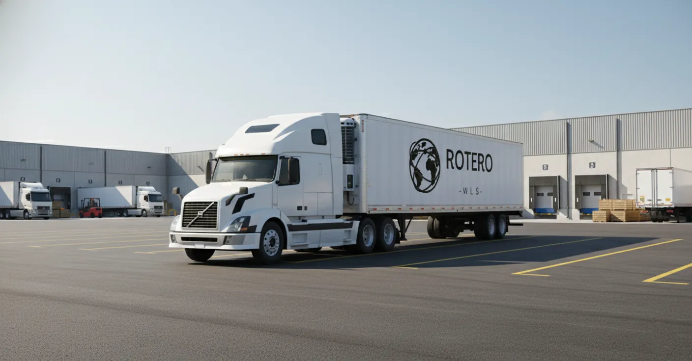
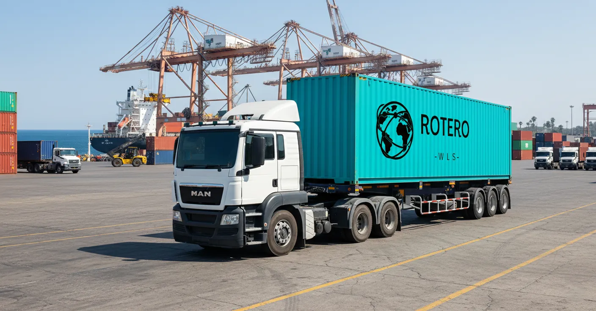
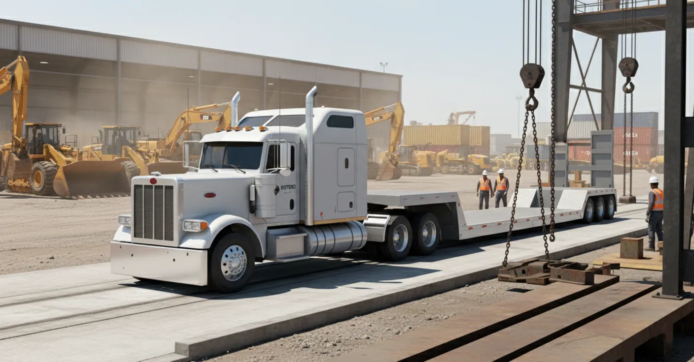
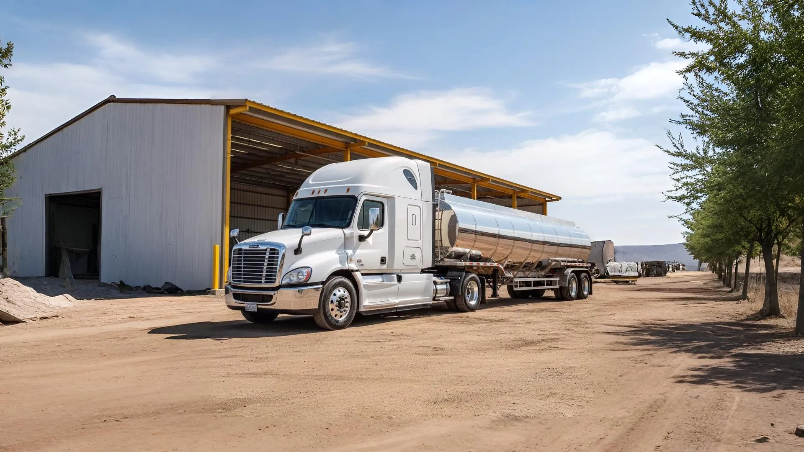
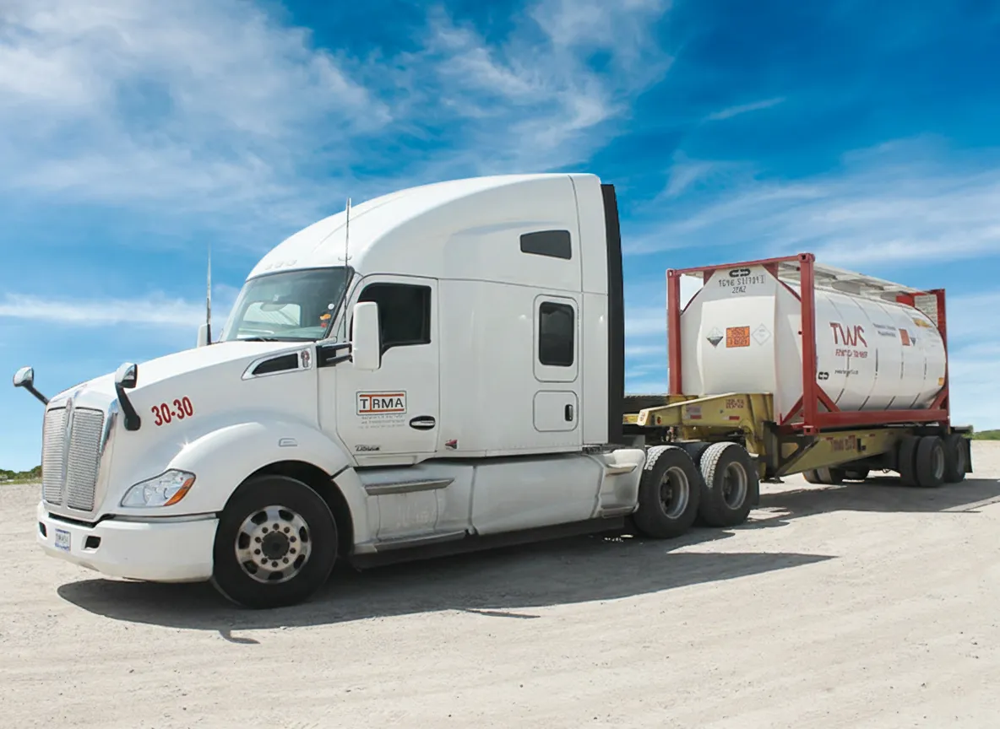

Nissan / Rabón
1.5–8 ton · reparto urbano y rutas cortas con acceso a zonas restringidas.
- Distribución local y última milla.
- Configuración caja seca o estacas (según operación).
- Rastreo 24/7 y cumplimiento NOM-012.
Unidades modernas con mantenimiento riguroso y configuraciones para cada necesidad: urbano, regional, larga distancia e intermodal.

1.5–8 ton · reparto urbano y rutas cortas con acceso a zonas restringidas.

15–18 ton · operación regional con alta disponibilidad.

Larga distancia con alta cubicación para mercancía general.

Intermodal 20’/40’ (dry/reefers) para importación y exportación.

Sobredimensionado y alto tonelaje con cama baja.

Tanque de acero inoxidable para traslado a granel de líquidos químicos o food-grade.

Chasis con twistlocks para isotanques de químicos, food-grade y HazMat.